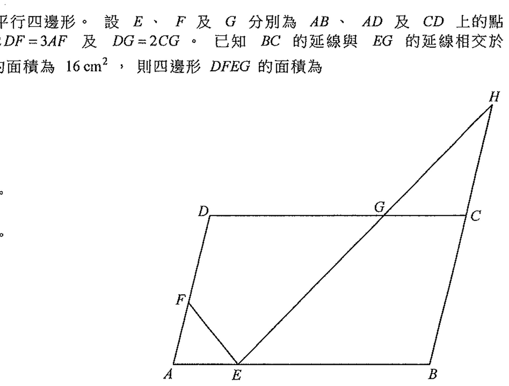
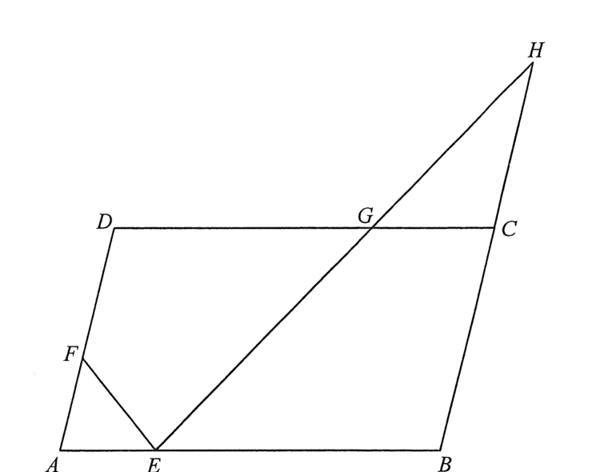

2025 DSE 數學 P2 Q17 答案＋詳解｜答對率 40%
官方答案
B
歷年考生答對率 40%（官方統計）
題目（中文卷）
圖中，$ABCD$ 為一平行四邊形。設 $E$ 、$F$ 及 $G$ 分別為 $AB$ 、$AD$ 及 $CD$ 上的點使得 $BE=3AE$ 、$2DF=3AF$ 及 $DG=2CG$ 。已知 $BC$ 的延線與 $EG$ 的延線相交於點 $H$ 。若 $\triangle CGH$ 的面積為 $16\ \text{cm}^2$ ，則四邊形 $DFEG$ 的面積為

- A. $46\ \text{cm}^2$
- B. $49\ \text{cm}^2$
- C. $105\ \text{cm}^2$
- D. $115\ \text{cm}^2$
English version（英文卷題目）
In the figure, $ABCD$ is a parallelogram. Let $E$, $F$ and $G$ be points lying on $AB$, $AD$ and $CD$ respectively such that $BE = 3AE$, $2DF = 3AF$ and $DG = 2CG$. It is given that $BC$ produced and $EG$ produced meet at the point $H$. If the area of $\triangle CGH$ is $16$ cm$^2$, then the area of the quadrilateral $DFEG$ is

- A. $46$ cm$^2$
- B. $49$ cm$^2$
- C. $105$ cm$^2$
- D. $115$ cm$^2$
官方題解 / 評卷參考
答案：B
- 取座標（只影響比例，最後按面積放大）：$A(0,0)$、$B(4,0)$、$D(0,5)$、$C(4,5)$。
- $BE=3AE\Rightarrow E(1,0)$；$2DF=3AF\Rightarrow F(0,2)$；$DG=2CG\Rightarrow G\left(\dfrac83,5\right)$。
- 直線 $EG$ 與 $BC$（即 $x=4$）交於 $H(4,9)$。
- $[CGH]=\dfrac12\left(4-\dfrac83\right)(9-5)=\dfrac83$；由鞋帶公式 $[DFEG]=\dfrac{49}{6}$。
- $\dfrac{[DFEG]}{[CGH]}=\dfrac{49/6}{8/3}=\dfrac{49}{16}$，故 $[DFEG]=16\times\dfrac{49}{16}=49\ \text{cm}^2$。
錯項分析：
- A. 把 $CH$ 的長度當成 $=\dfrac34BC$（正解應為 $\dfrac45BC$），令 $[CGH]$ 與總面積的比例偏離。
- C. 把 $AF:FD=2:3$ 寫成 $3:2$，令 $[DFG]$ 偏大，再誤以為要整塊平行四邊形減去，得過大數值。
- D. 把 $DG:GC=2:1$ 寫成 $1:2$（$G$ 偏向 $C$），令 $[CGH]$ 用錯比例而答案偏大。